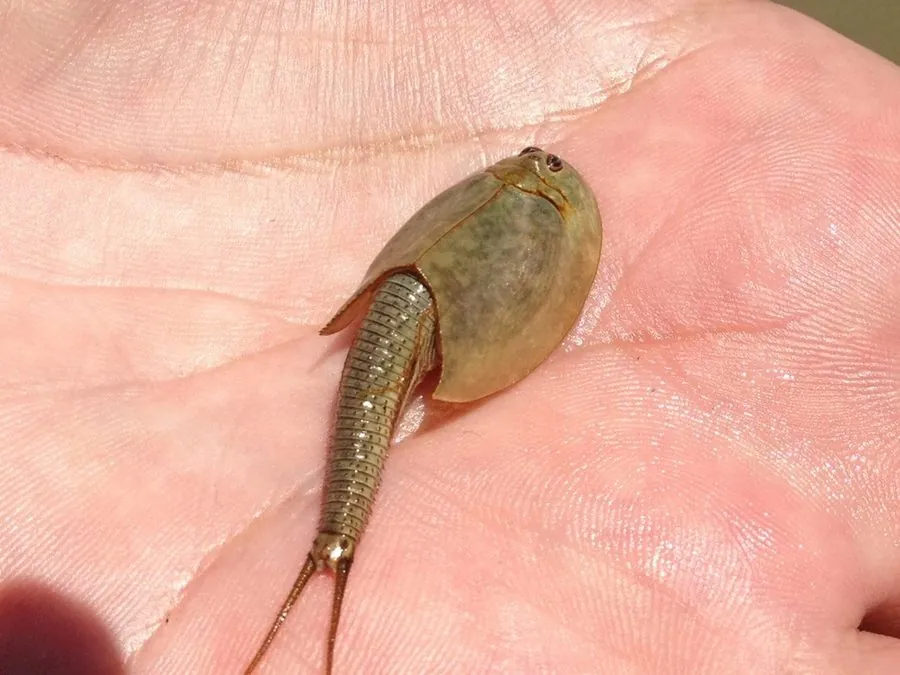

甲壳动物 · 动物界
三眼恐龙虾 Triops longicaudatus

外形像小鲎的淡水甲壳动物，卵可耐受长时间干燥，雨后水洼中迅速孵化，被称为活化石，对人畜无害。
- 分类
- 门节肢动物门纲鳃足纲目背甲目科鲎虫科属鲎虫属
- 栖息环境
- 稻田、临时水洼和浅水池塘，随雨季出现
- 地理分布
- 美洲、亚洲和澳大利亚的临时淡水水体
- 保护级别
- 暂无评估
物种志
三眼恐龙虾体长约 2–6 cm，身体被宽大的背甲覆盖，有三只眼睛，其中两只复眼、一只中眼，故名三眼；尾部分叉，有多对叶片状游泳足，外形像一只小鲎。
它生活在稻田、临时水洼和浅水池塘中，生命周期短，约 1–2 个月即可完成一代。它的卵能耐受长时间干燥，在土壤中保存数年，等雨水积成水洼后迅速孵化，因此在干旱地区也能延续种群。三眼恐龙虾杂食，取食藻类、有机碎屑和小型水生生物，对稻田中的蚊虫幼虫有一定控制作用。它分布于美洲、亚洲和澳大利亚的临时水体，是研究滞育和休眠的经典材料，对人畜无害，不需要防治。它的卵若被带到新的水洼，也能重新建立种群。
形态与习性
- 食性杂食，取食藻类、有机碎屑和小型水生生物
- 体长约 2–6 cm
- 特征有 3 只眼睛，背甲宽大，尾部有分叉
- 生活史生命周期短，约 1–2 个月完成一代
- 卵能耐受长时间干燥，在土壤中保存数年
- 生态捕食蚊虫幼虫，对人畜无害
趣味知识
- 三眼恐龙虾有三只眼睛，因此得名。
- 它的卵在干土里能存活好几年，下雨积水后立刻孵化。
- 三眼恐龙虾在稻田里会捕食蚊虫幼虫，对人畜无害。